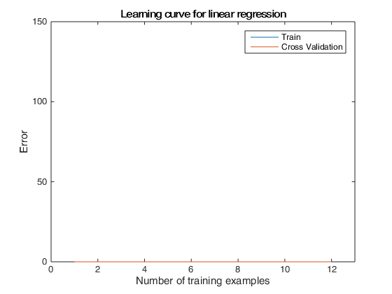

Machine Learning Online Class
Exercise 5 | Regularized Linear Regression and Bias-Variance
Instructions
------------
This file contains code that helps you get started on the
exercise. You will need to complete the following functions:
linearRegCostFunction.m
learningCurve.m
validationCurve.m
For this exercise, you will not need to change any code in this file,
or any other files other than those mentioned above.
Contents
Initialization
clear ; close all; clc
=========== Part 1: Loading and Visualizing Data =============
We start the exercise by first loading and visualizing the dataset.
The following code will load the dataset into your environment and plot
the data.
fprintf('Loading and Visualizing Data ...\n')
load ('ex5data1.mat');
m = size(X, 1);
plot(X, y, 'rx', 'MarkerSize', 10, 'LineWidth', 1.5);
xlabel('Change in water level (x)');
ylabel('Water flowing out of the dam (y)');
fprintf('Program paused. Press enter to continue.\n');
pause;
Loading and Visualizing Data ...
Program paused. Press enter to continue.
=========== Part 2: Regularized Linear Regression Cost =============
You should now implement the cost function for regularized linear
regression.
theta = [1 ; 1];
J = linearRegCostFunction([ones(m, 1) X], y, theta, 1);
fprintf(['Cost at theta = [1 ; 1]: %f '...
'\n(this value should be about 303.993192)\n'], J);
fprintf('Program paused. Press enter to continue.\n');
pause;
Cost at theta = [1 ; 1]: 0.000000
(this value should be about 303.993192)
Program paused. Press enter to continue.
=========== Part 3: Regularized Linear Regression Gradient =============
You should now implement the gradient for regularized linear
regression.
theta = [1 ; 1];
[J, grad] = linearRegCostFunction([ones(m, 1) X], y, theta, 1);
fprintf(['Gradient at theta = [1 ; 1]: [%f; %f] '...
'\n(this value should be about [-15.303016; 598.250744])\n'], ...
grad(1), grad(2));
fprintf('Program paused. Press enter to continue.\n');
pause;
Gradient at theta = [1 ; 1]: [0.000000; 0.000000]
(this value should be about [-15.303016; 598.250744])
Program paused. Press enter to continue.
=========== Part 4: Train Linear Regression =============
Once you have implemented the cost and gradient correctly, the
trainLinearReg function will use your cost function to train
regularized linear regression.
Write Up Note: The data is non-linear, so this will not give a great
fit.
lambda = 0;
[theta] = trainLinearReg([ones(m, 1) X], y, lambda);
plot(X, y, 'rx', 'MarkerSize', 10, 'LineWidth', 1.5);
xlabel('Change in water level (x)');
ylabel('Water flowing out of the dam (y)');
hold on;
plot(X, [ones(m, 1) X]*theta, '--', 'LineWidth', 2)
hold off;
fprintf('Program paused. Press enter to continue.\n');
pause;
Program paused. Press enter to continue.
=========== Part 5: Learning Curve for Linear Regression =============
Next, you should implement the learningCurve function.
Write Up Note: Since the model is underfitting the data, we expect to
see a graph with "high bias" -- Figure 3 in ex5.pdflambda = 0;
[error_train, error_val] = ...
learningCurve([ones(m, 1) X], y, ...
[ones(size(Xval, 1), 1) Xval], yval, ...
lambda);
plot(1:m, error_train, 1:m, error_val);
title('Learning curve for linear regression')
legend('Train', 'Cross Validation')
xlabel('Number of training examples')
ylabel('Error')
axis([0 13 0 150])
fprintf('# Training Examples\tTrain Error\tCross Validation Error\n');
for i = 1:m
fprintf(' \t%d\t\t%f\t%f\n', i, error_train(i), error_val(i));
end
fprintf('Program paused. Press enter to continue.\n');
pause;
# Training Examples Train Error Cross Validation Error
1 0.000000 0.000000
2 0.000000 0.000000
3 0.000000 0.000000
4 0.000000 0.000000
5 0.000000 0.000000
6 0.000000 0.000000
7 0.000000 0.000000
8 0.000000 0.000000
9 0.000000 0.000000
10 0.000000 0.000000
11 0.000000 0.000000
12 0.000000 0.000000
Program paused. Press enter to continue.

=========== Part 6: Feature Mapping for Polynomial Regression =============
One solution to this is to use polynomial regression. You should now
complete polyFeatures to map each example into its powers
p = 8;
X_poly = polyFeatures(X, p);
[X_poly, mu, sigma] = featureNormalize(X_poly);
X_poly = [ones(m, 1), X_poly];
X_poly_test = polyFeatures(Xtest, p);
X_poly_test = bsxfun(@minus, X_poly_test, mu);
X_poly_test = bsxfun(@rdivide, X_poly_test, sigma);
X_poly_test = [ones(size(X_poly_test, 1), 1), X_poly_test];
X_poly_val = polyFeatures(Xval, p);
X_poly_val = bsxfun(@minus, X_poly_val, mu);
X_poly_val = bsxfun(@rdivide, X_poly_val, sigma);
X_poly_val = [ones(size(X_poly_val, 1), 1), X_poly_val];
fprintf('Normalized Training Example 1:\n');
fprintf(' %f \n', X_poly(1, :));
fprintf('\nProgram paused. Press enter to continue.\n');
pause;
Normalized Training Example 1:
1.000000
NaN
NaN
NaN
NaN
NaN
NaN
NaN
NaN
Program paused. Press enter to continue.
=========== Part 7: Learning Curve for Polynomial Regression =============
Now, you will get to experiment with polynomial regression with multiple
values of lambda. The code below runs polynomial regression with
lambda = 0. You should try running the code with different values of
lambda to see how the fit and learning curve change.
lambda = 0;
[theta] = trainLinearReg(X_poly, y, lambda);
figure(1);
plot(X, y, 'rx', 'MarkerSize', 10, 'LineWidth', 1.5);
plotFit(min(X), max(X), mu, sigma, theta, p);
xlabel('Change in water level (x)');
ylabel('Water flowing out of the dam (y)');
title (sprintf('Polynomial Regression Fit (lambda = %f)', lambda));
figure(2);
[error_train, error_val] = ...
learningCurve(X_poly, y, X_poly_val, yval, lambda);
plot(1:m, error_train, 1:m, error_val);
title(sprintf('Polynomial Regression Learning Curve (lambda = %f)', lambda));
xlabel('Number of training examples')
ylabel('Error')
axis([0 13 0 100])
legend('Train', 'Cross Validation')
fprintf('Polynomial Regression (lambda = %f)\n\n', lambda);
fprintf('# Training Examples\tTrain Error\tCross Validation Error\n');
for i = 1:m
fprintf(' \t%d\t\t%f\t%f\n', i, error_train(i), error_val(i));
end
fprintf('Program paused. Press enter to continue.\n');
pause;
Polynomial Regression (lambda = 0.000000)
# Training Examples Train Error Cross Validation Error
1 0.000000 0.000000
2 0.000000 0.000000
3 0.000000 0.000000
4 0.000000 0.000000
5 0.000000 0.000000
6 0.000000 0.000000
7 0.000000 0.000000
8 0.000000 0.000000
9 0.000000 0.000000
10 0.000000 0.000000
11 0.000000 0.000000
12 0.000000 0.000000
Program paused. Press enter to continue.
=========== Part 8: Validation for Selecting Lambda =============
You will now implement validationCurve to test various values of
lambda on a validation set. You will then use this to select the
"best" lambda value.
[lambda_vec, error_train, error_val] = ...
validationCurve(X_poly, y, X_poly_val, yval);
close all;
plot(lambda_vec, error_train, lambda_vec, error_val);
legend('Train', 'Cross Validation');
xlabel('lambda');
ylabel('Error');
fprintf('lambda\t\tTrain Error\tValidation Error\n');
for i = 1:length(lambda_vec)
fprintf(' %f\t%f\t%f\n', ...
lambda_vec(i), error_train(i), error_val(i));
end
fprintf('Program paused. Press enter to continue.\n');
pause;
lambda Train Error Validation Error
0.000000 0.000000 0.000000
0.001000 0.000000 0.000000
0.003000 0.000000 0.000000
0.010000 0.000000 0.000000
0.030000 0.000000 0.000000
0.100000 0.000000 0.000000
0.300000 0.000000 0.000000
1.000000 0.000000 0.000000
3.000000 0.000000 0.000000
10.000000 0.000000 0.000000
Program paused. Press enter to continue.